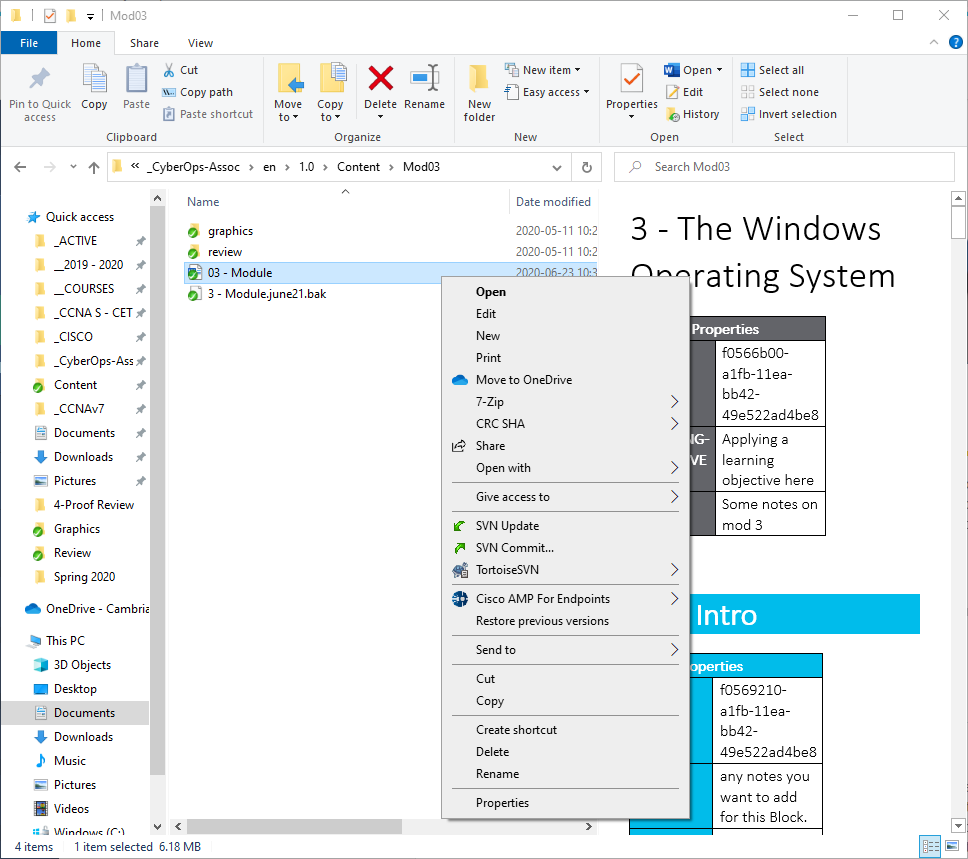

3.1.1 Sistema operativo de disco
Las primeras computadoras no tenían dispositivos de almacenamiento modernos, como discos duros, unidades ópticas o unidades de memoria flash. Los primeros métodos de almacenamiento utilizaban tarjetas perforadas, cinta de papel, cinta magnética y hasta casetes de audio.
El almacenamiento en disquete y disco duro requiere un software para leer, escribir y administrar los datos que se almacenan. El Sistema Operativo de Disco (DOS) es un sistema operativo que utiliza la computadora para habilitar estos dispositivos de almacenamiento de datos para leer y escribir archivos. DOS provee un sistema de archivos que organiza los archivos en una forma especifica en el disco Microsoft compró DOS y desarrolló MS-DOS.
MS-DOS utiliza una línea de comandos como interfaz para que las personas creen programas y manipulen archivos de datos, como se muestra en la salida del comando. Los comandos DOS se muestran en negrita.

Con MS-DOS, la computadora tenía conocimientos básicos sobre cómo acceder a la unidad de disco y cargar los archivos del sistema operativo directamente desde el disco como parte del proceso de arranque. Cuando se cargaba, MS-DOS podía tener acceso al disco fácilmente porque estaba incorporado en el sistema operativo.
Las primeras versiones de Windows consistían en un Interfaz Gráfica de Usuario (GUI) que se ejecuta sobre MS-DOS, iniciando con Windows 1.0 en 1985 El sistema operativo de disco todavía controlaba la computadora y su hardware. Un sistema operativo moderno, como Windows 10, no se considera un sistema operativo de disco. Se basa en Windows NT, y esta sigla significa “nuevas tecnologías”. El propio sistema operativo controla directamente la computadora y su hardware. NT es un sistema operativo compatible con múltiples procesos de usuario. Esto es muy diferente al MS-DOS de un solo proceso y un solo usuario.
Actualmente, muchas de las cosas que solían hacerse a través de la interfaz de línea de comandos de MS-DOS se pueden hacer en la GUI de Windows. Todavía es posible experimentar lo que era usar MS-DOS abriendo una ventana de comando, pero lo que vemos ya no es MS-DOS, sino una función de Windows. Para experimentar un poco de cómo era trabajar en MS-DOS, abra una ventana de comandos escribiendo cmd en Windows Search y presionando Enter. La tabla muestra algunos comandos que puede utilizar. Introduzca help seguido del comando para obtener más información sobre el comando.
| Comando MS-DOS | Descripción |
|---|---|
| dir | Permite ver una lista de todos los archivos en el directorio actual (carpeta) |
| cd directory | Cambia del directorio indicado |
| cd.. | Cambia el directorio al directorio sobre el directorio actual |
| cd \ | Cambia el directorio al directorio root (Usualmente C:) |
| copy Origen de destino | Copia los archivos a otra ubicación |
| del Nombre del archivo | Borra uno o más archivos |
| find | Buscar texto en archivos |
| mkdir DIrectorio | Crea un nuevo directorio |
| ren Nombre antiguo, nombre nuevo | Renombra un archivo |
| help | Muestra todos los comandos que pueden ser usados, con una breve descripción |
| help command | Muestra una ayuda extensa para el comando indicado |
3.1.2 Versiones de Windows
Desde el año 1993 hubo más de 20 versiones de Windows basadas en el sistema operativo NT. La mayoría de estas versiones eran para uso del público general y las empresas, debido a la seguridad de los archivos que ofrecía el sistema de archivos utilizado por el sistema operativo NT. Las empresas también adoptaron los sistemas operativos Windows basados en NT. Esto ocurrió porque muchas ediciones se diseñaron específicamente para estaciones de trabajo, profesionales, servidores, servidores avanzados y servidores de centro de datos, por nombrar solamente algunas de las muchas versiones de diseño específico.
A partir de Windows XP, comenzó a estar disponible una edición de 64 bits. El sistema operativo de 64 bits era una arquitectura totalmente nueva. Tenía un espacio para la dirección postal de 64 bits, en lugar de uno de 32 bits. Esto no significa solamente el doble de espacio, ya que estos bits son números binarios. Mientras que Windows de 32 bits tiene espacio para un poco menos de 4 GB de RAM, Windows de 64 bits puede tener, teóricamente, espacio para 16,8 millones de terabytes. Cuando el sistema operativo y el hardware admiten el funcionamiento de 64 bits, es posible usar conjuntos de datos extremadamente grandes. Estos enormes conjuntos de datos incluyen bases de datos muy grandes, computación científica y manipulación de video digital de alta definición con efectos especiales. En general, las computadoras y los sistemas operativos de 64 bits son compatibles con programas más antiguos de 32 bits, pero los programas de 64 bits no pueden ejecutarse en el hardware más antiguo de 32 bits.
Con cada nuevo lanzamiento de Windows, el sistema operativo se ha mejorado con la incorporación de más funciones. Windows 7 se ofreció con seis ediciones diferentes y Windows 8 con cinco. Windows 10 se lanzó ¡con ocho ediciones diferentes! Cada edición no ofrece solamente capacidades diferentes, sino precios distintos. Microsoft ha dicho que Windows 10 es la última versión de Windows y que Windows se ha convertido en un servicio en lugar de solo un sistema operativo. Dicen que, en lugar de comprar nuevos sistemas operativos, los usuarios solamente deberán actualizar Windows 10.
En la tabla se enumeran las versiones comunes de Windows.
| SO | Versiones |
|---|---|
| bWindows 7 | Starter, Home Basic, Home Premium, Professional, Enterprise, Ultimate |
| Windows Server 2008 R2 | Foundation, Standard, Enterprise, Datacenter, Web Server, HPC Server y para sistemas con procesadores Itanium |
| Windows Home Server 2011 | None |
| Windows 8 | Windows 8, Windows 8 Pro, Windows 8 Enterprise, Windows RT |
| Windows Server 2012 | Foundation, Essentials, Standard, Datacenter |
| Windows 8.1 | Foundation, Essentials, Standard, Datacenter |
| Windows Server 2012 R2 | Foundation, Essentials, Standard, Datacenter |
| Windows 10 | Home, Pro, Pro Education, Enterprise, Education, loT Core, Mobile, Mobile Enterprise |
| Windows Server 2016 | Essentials, Standard, Datacenter, Multipoint Premium Server, Storage Server, Hyper-V Server |
3.1.3 GUI de Windows
Windows tiene una interfaz gráfica de usuario (Graphical User Interface, GUI) para que los usuarios trabajen con software y archivos de datos. La interfaz gráfica de usuario tiene un área principal que es conocida como El Escritorio, mostrada en la figura.

El escritorio se puede personalizar con diferentes colores e imágenes de fondo. Windows admite múltiples usuarios, para que cada uno pueda personalizar el escritorio a su gusto. El escritorio puede almacenar archivos, carpetas, accesos directos a ubicaciones y programas, y aplicaciones. Además, el escritorio tiene un icono de papelera de reciclaje, donde se almacenan los archivos cuando el usuario los elimina. Es posible restaurar archivos desde la papelera de reciclaje o se la puede vaciar y, de este modo, eliminarlos definitivamente.
En la parte inferior del escritorio, se encuentra la barra de tareas. La barra de tareas tiene tres áreas que se utilizan para diferentes propósitos. A la izquierda, se encuentra el menú Inicio. Se utiliza para acceder a todos los programas instalados, las opciones de configuración y la función de búsqueda. En el centro de la barra de tareas, los usuarios colocan los iconos de inicio rápido que ejecutan programas específicos o abren determinadas carpetas cuando se hace clic en ellos. Finalmente, a la derecha de la barra de tareas, se encuentra el área de notificación. El área de notificación permite ver, a simple vista, la funcionalidad de una serie de programas y características diferentes. Por ejemplo, un icono de un sobre parpadeando puede indicar un correo electrónico nuevo, o un icono de red con una “x” roja puede indicar un problema con la red.
A menudo, al hacer clic derecho sobre un icono se presentan funciones adicionales que pueden utilizarse. Esta lista se conoce como menú contextual, que se muestra en la figura.

Existen menús contextuales para los iconos en el área de notificación y también para los iconos de inicio rápido, los iconos de configuración del sistema y para los archivos y carpetas. El menú contextual permite tener acceso a muchas de las funciones más utilizadas con apenas un clic. Por ejemplo, el menú contextual para un archivo contendrá elementos como copiar, eliminar, compartir e imprimir. Para abrir carpetas y manipular archivos, Windows utiliza el explorador de archivos de Windows.
3.1.4 Vulnerabilidades en el sistema operativo
Los sistemas operativos consisten en millones de líneas de código. El software instalado también puede contener millones de líneas de código. Todo este código acarrea vulnerabilidades. Una vulnerabilidad es una imperfección o debilidad que puede ser aprovechada por un atacante para reducir la viabilidad de la información de una computadora. Para aprovechar una vulnerabilidad de un sistema operativo, el atacante debe utilizar una técnica o herramienta para atacarla. El atacante puede utilizar la vulnerabilidad para hacer que la computadora actúe de una manera diferente a la prevista en su diseño. En general, el objetivo es hacerse con el control no autorizado de la computadora, cambiar permisos o manipular datos.
La tabla enumera algunas recomendaciones comunes de seguridad del sistema operativo Windows.
| Recomendación | Descripción |
|---|---|
| Protección contra virus o malware |
|
| Servicios Desconocidos o no administrados |
|
| Cifrado |
|
| Política de seguridad |
|
| Firewall |
|
| Permisos de archivo y uso compartido |
|
| Contraseña débil o sin contraseña |
|
| Iniciar sesión como administrador |
|